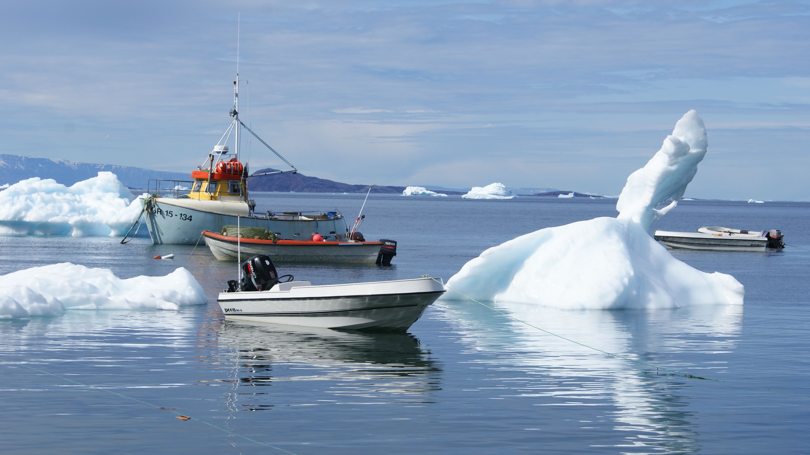
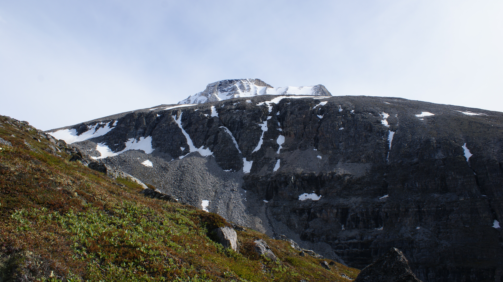

Ukkusissat
Avannaata municipality's settlement Ukkusissat is located in northwest Greenland. By 2020 the town had a population of 154. The name implies soapstone. Jutting from the mainland to the west and northwest and into the inner waterways of the Uummannaq Fjord system, it abuts the northwest tip of the peninsula of the same name. Large inner fjord Perlerfiup Kangerlua drains into the main branch of Uummannaq Fjord north of the village. Along with the level Qeqertat skerries, the steep mountains of Salleq Island and the considerably bigger Appat Island lie to the south and southwest across Torsukattak Strait.
 